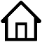

|  | Home |
|
Research |
We considered multilevel flash memories in this work. We provided constructions of codes from cosets of linear codes that can provide error correction against charge leakage due to aging in flash memory, improve rewritability leading to fewer erasure operations, and also correct against random errors.
Communication over a power line channel has been a subject of
study and application since the 1950s. Recent research has been
focused on two-way communication over this channel. The channel
characteristics are harsh, with the presence of permanent
narrowband noise which may be present at a particular frequency
at all time instances of transmission, impulse noise which may
be present at all frequencies in a particular time instance,
fading, and Gaussian noise.
Vinck
2000, proposed the use of M-ary frequency shift
keying modulation, along with the use of permutation codes, in
which every symbol of the alphabet occurs exactly once in every
codeword. Each
symbol of the alphabet is transmitted on a separate frequency.
This modulation scheme helps to counter the harsh nature of
this channel; in particular to correct errors arising from the
permanent narrowband noise and impulse noise.
The research has since diverged into using
frequency permutation arrays, in which every symbol of
the alphabet occurs equal number of times in every codeword,
constant composition codes, in which every symbol of
the alphabet occurs a fixed number of times in every codeword,
and injection codes, in which every symbol occurs at
most once in every codeword.
There has also been a significant amount of research over the
past decade in determining permutation codes, frequency
permutation arrays, and constant composition codes by using
distance preserving maps from the binary and ternary Hamming
space. The distance preserving maps ensure that the distance
between two vectors in the Hamming space is either maintained
or increased when mapped to the space of permutations,
frequency permutation arrays, or the constant composition
space.
Our work in this area is described below.
In the works of Versfeld et.al 2005 - 2010, the notion
of a "same-symbol weight" of a code is introduced. This notion
captures the maximum frequency of any symbol over all codewords in
the code. For example, if a code of block length n contains the
all-zero codeword then the code has the same-symbol weight of
n, since the zero symbol occurs with frequency n in the
all-zero codeword.
Our contribution:
In this work we study the space of all vectors that contain
symbols with frequency at most a fixed number, say, r. This
space is termed as the bounded symbol weight space. This
notion is the same notion as the same-symbol weight.
The space of all vectors that have a symbol with exactly
a fixed number r, and no symbol occurs more frequently, is
termed as the constant symbol weight space. We first
determine the sizes of these symbol weight spaces and then use
the sizes to estimate the asymptotic form of classical bounds,
such as the Gilbert-Varshamov bound, Singleton bound, and
Johnson bound, on the size of codes in these spaces. The
non-asymptotic versions of these classical bounds are not
immediate and it
remains an open question to determine nice analytical
expressions for them. The primary hurdle in applying the
classical bounds arises from the fact that the space is not
ball-homogeneous, i.e., the size of the Hamming balls depends
on the center.
We also provide new non-asymptotic lower bounds by studying
the symbol weight spaces as unions of disjoint constant
composition spaces. We introduce a new distance metric on the
space of compositions and use this metric to determine lower
bounds on the size of codes in the symbol weight spaces in
terms of constant composition codes.
Finally, we study Reed-Solomon codes and show that
the Gilbert-Varshamov bound on codes in symbol weight spaces
can be achieved by using subsets of Reed-Solomon codes.
Our contribution: In the coded modulation scheme of Vinck 2000, the permanent narrowband noise typically manifests as the presence of a particular symbol at all time instances of the transmission. We extend the analysis in Vinck 2000 to more general codes by introducing a new parameter that captures the equity of symbols in a code. This parameter is more accurate in determining the performance of a code in the presence of permanent narrowband noise. Codes which are optimal with respect to this parameter are shown to be able to correct more narrowband noise than other codes with similar length, size and minimum distance parameters. Permutation codes, injection codes, and frequency permutation arrays are special cases of such constructions.
Distance preserving maps (DPMs) from the Hamming space to
the permutation space have been the subject of much interest
over the past decade due to their application to power line
communication channels. However, most of the work has
concentrated on constructing DPMs from the binary or ternary
Hamming spaces to the permutation space, such that most of the
distances between the mapped vectors increase substantially
after being mapped to the permutation space. Relatively less
work is present on the
decoding of the permutation codes thus obtained. The paper by
Swart and Ferreira 2007 is one instance where
DPMs from the binary Hamming space to the permutation space
are constructed with good decoding algorithms for the
permutation codes.
Our contribution:
In this work, we consider distance preserving maps from the
q-ary Hamming space to the permutation space, for q=2,3 and
powers of two. The maps are
constructed such that it is possible to efficiently decode the
received codewords. The main idea behind the construction of
the DPMs is to allow the symbols in the q-ary Hamming space to
be efficiently estimated from the received permutation symbols.
Decoding algorithms for linear codes is then applied to the
estimated symbols to obtain the transmitted codeword.
However, the requirement of efficient decoding comes at a cost,
- we lose on the rate of the code. We conjecture that our
method can be extended to DPMs from q-ary Hamming space to the
permutation space, for any q. This is verified computationally
for values of q up to eight.
Our contribution: In this work, we show that it is possible to construct codes which simultaneously achieve positive rates, positive relative distances, have efficient decoding algorithms, and whose length is not restricted by the alphabet size. We are aware of only Reed Solomon codes which have the first three properties. We show that by using concatenated codes with constant weight inner codes, and by using multiple tone at each time (multitone FSK), we can achieve all these needed properties. Simulations show that the codes perform better than cosets of Reed Solomon codes.
Our contribution: We generalize Vinck's construction to codes that are efficiently decodable, but whose block lengths are not restricted by the alphabet size (for example permutation codes have this restriction). We used a coded modulation scheme that uses multitone frequency shift keying as the modulation scheme. We showed that by taking products of affine codes (a linear code shifted by a constant nonzero vector), it is possible to obtain "good" codes that can correct all the four types of noises in the power line channel, and that simultaneously achieve the following properties: they have positive rates, positive relative distances, and their lengths are not restricted by the alphabet size. In addition the codes have the property that they are systematic and are cosets of linear codes, and thereby have efficient decoding algorithms.
A crucial requirement to reliably transmit information in
a digital communication system is to establish synchronization
between the transmitter and the receiver. Synchronization is
required to determine the start of a symbol as well as to
determine the start of a frame of data in the received signals.
The objective in current methods for achieving faster frame
synchronization is to search for a word within a specified
Hamming distance of the transmitted synchronization word,
instead of exactly matching the synchronization word. This
procedure requires a simultaneous search for a set of
synchronization words, which has the property that a prefix of
any length of any word is not the suffix of any word in the
set. This property of the set was termed as
cross-bifix-free in the works of Bajic, et.al
2003-2007. We term this set as a cross-bifix-free code.
Our contribution:
We provide new constructions of these codes which extend the
construction in
Bajic 2007 in two ways. In that work the words in the
cross-bifix-free codes constructed were over the binary
alphabet, were of length up to eight, and the sizes of the codes
satisfied a Fibonacci recursion. We extend this construction to
any lengths and to any alphabet size. The sizes of the binary
cross-bifix-free codes obtained from our constructions are
optimal for all small lengths (except for an instance at
length nine). The near optimality of the general construction is
proved by showing that the sizes satisfy a generalized
Fibonacci recursion, and then by establishing properties of
the generalized Fibonacci numbers.
Our contribution: We construct a new family of linear error correcting codes in the q-ary Hamming space. These codes are self-complementary, that is, the all-one vector is present in the code. The codes are obtained by performing code operations such as extension, augmentation, and concatenation of a specific family of Hadamard codes that are constructed in this work. The codes are shown to be optimal with respect to the generalized Grey-Rankin bound, and for a specific parameter, the Griesmer bound.
The ordered Hamming space, also known as the
Niederreiter-Rosenbloom-Tsfasman space, was introduced by
Niederreiter 1986 and independently by
Rosenbloom and Tsfasman 1997.
Niederreiter introduced this metric in the study of
distributions of point sets in the unit cube called (t,m,s)-nets.
(t,m,s)-nets are of interest because of their
application to quasi-Monte-Carlo integration of functions
defined on the unit cube. Rosenbloom and Tsfasman introduced
this metric in order to describe a new communication channel.
This metric has also occured in the context of fading channels
in the work of
Tavildar and Viswanath 2006.
The work of
Martin and Stinson 1999 established that certain
objects called ordered orthogonal arrays (OOAs), which are
closely related to (t,m,s)-nets, are dual objects to ordered
codes, in the context of Delsarte’s theory of Association
Schemes. Bounds on OOAs and (t,m,s)-nets are of interest
for estimating the error of quasi-Monte-Carlo integration.
Closely connected to the notion of the ordered Hamming space is
the poset metric space.
The poset space has been studied for nearly two decades as a
generalization of the Hamming space and also because of its
connection to distributions of points in the unit cube for
numerical integration of functions. Vectors in this space have
a partial ordering in their coordinate indices. The distance
is measured as the sum of the largest nonzero indices in
a vector. As an example, consider the poset space which has the
coordinate indices {1,2,3,4} with the ordering 1 ≤ 2 ≤ 3
and 4 ≤ 3, and consider the vector [1,0,1,0] as an element
in this space. In this case, the weight of this vector in the
poset space is three because the element in the third
coordinate is nonzero and is at index three in the ordering.
On the other hand the weight of the
vector [0,0,0,1] is one because the fourth coordinate is at index
one in the ordering. A special case of the poset metric is the
ordered Hamming metric in which the coordinates are
ordered as disjoint chains of equal length.
To put the Hamming metric in perspective, note that the Hamming
metric corresponds to having no ordering among the coordinate
indices, i.e., it is an anti-chain.
Our work in this area is described below.
Codes which have parameters close to or at the theoretical
upper bounds are of much interest since they are optimal (or
close to optimal) for their values of the minimum distance.
Maximum Distance Separable (MDS) codes are a famous example of
such codes, whose minimum distance attains the Singleton upper
bound. MDS codes in the Hamming space are connected with some
classical problems in finite geometries related to the
existence of some extremal configurations in projective
geometries. MDS codes in the ordered Hamming space are
equivalent to optimal distributions of points in the unit
cube. Near MDS codes are codes which have distance just one
less than the distance of MDS codes. However, their second
generalized Hamming weight, which is the minimum support of any
two-dimensional subcode of a code, coincides with that of the
MDS codes.
Our contribution:
In this work, we showed that the notion of linear Near MDS codes
and generalized Hamming weights can be generalized to the poset
space, and determined the properties and the weight distribution
of such codes. In particular,
we studied the structure of the code simultaneously as a linear
code and as an ordered orthogonal array. This enabled us
to establish the weight distribution of the code and provide
its relation to uniform distributions of points in the unit
cube such as optimal distributions and
(t,m,s)-nets.
Our contribution: In this work we studied a special case of the poset metric space called the ordered Hamming space. We studied the combinatorial structure of the ordered Hamming space, in the context of Association Schemes, and established the properties of orthogonal polynomials, called the multivariate Krawtchouk polynomials, associated with this ordered Hamming scheme. This study enabled us to determine linear programming (LP) upper bounds on the size of codes (and corresponding lower bounds on ordered orthogonal arrays) in this space. Traditionally, the LP bound for codes in the Hamming space was obtained by determining the extremal roots of the univariate Krawtchouk polynomials. Owing to the difficulty in estimating the extremal roots of the multivariate Krawtchouk polynomials, we instead applied the Spectral Method, first introduced by Bachoc 2006 in the context of LP bounds on codes in the Grassmannian space. The results obtained give the best known asymptotic upper bounds on the size of codes in the ordered Hamming space.
Our contribution: We extended a polynomial technique of Delsarte 1973 to provide bounds on a family of subsets of a set, with restricted pairwise intersections between the subsets. The polynomial method in Delsarte 1973 studies pairs of points in the Hamming space and uses the association scheme of the Hamming space to provide bounds on codes with restricted distances. We identified a subset of a set of n elements with the support of an n-dimensional vector in the binary Hamming space. We used a refinement of the association scheme called the Terwilliger algebra and studied the distances between triplets of points in the Hamming space to provide bounds on the family of subsets.
Our contribution: The Johnson bound for constant weight codes in the binary Hamming space is a well known upper bound. It is typically proved by averaging over all the distances in the constant weight code. We showed that this averaging technique can be adapted to provide sharper bounds on constant weight codes. In particular, we provided two new upper bounds which improve the existing Johnson bound for a varied range of parameters. The first bound is obtained by considering a weighted average of the distances in the constant weight code. The second bound is obtained by observing that the L2 norm (with uniform measure) of a sequence of numbers is at least as large as the L1 norm (with uniform measure) of the sequence. These new bounds are also valid in the region at or beyond the Johnson radius where the Johnson bound does not exist. The values of these new bounds are sometimes exact and meet the table of bounds for constant weight codes presented in Agrell, Vardy and Zeger 2000. The techniques we introduced are also adapted to improve non-asymptotic Johnson bounds on constant weight codes in the q-ary Hamming space.
Last modified: Feb 01, 2021
|